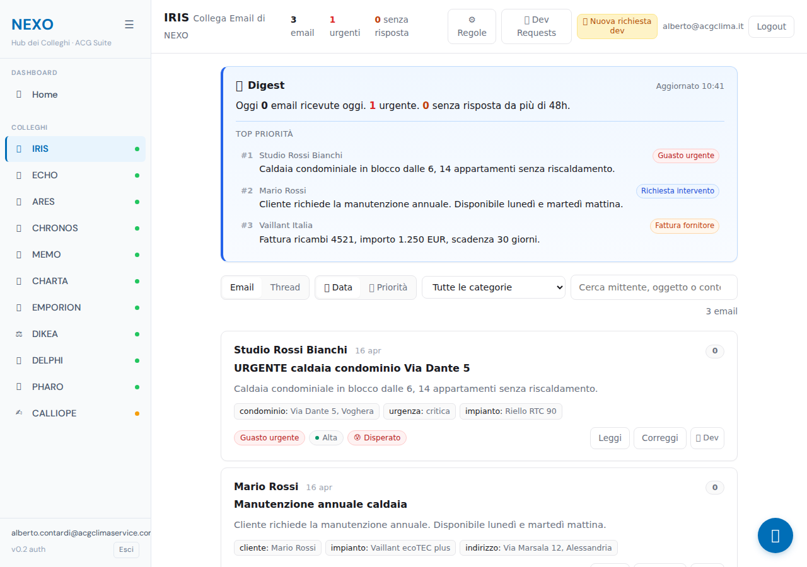
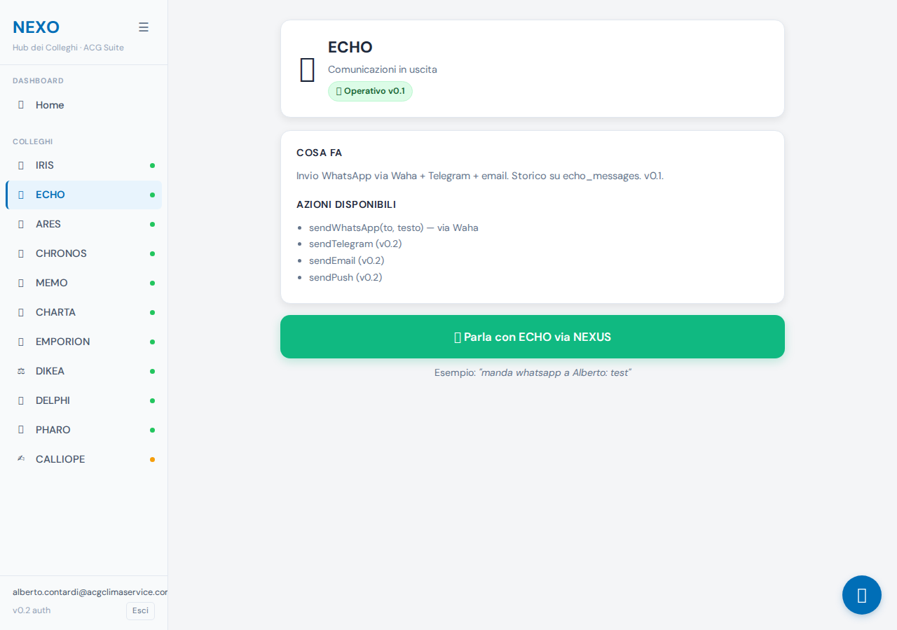
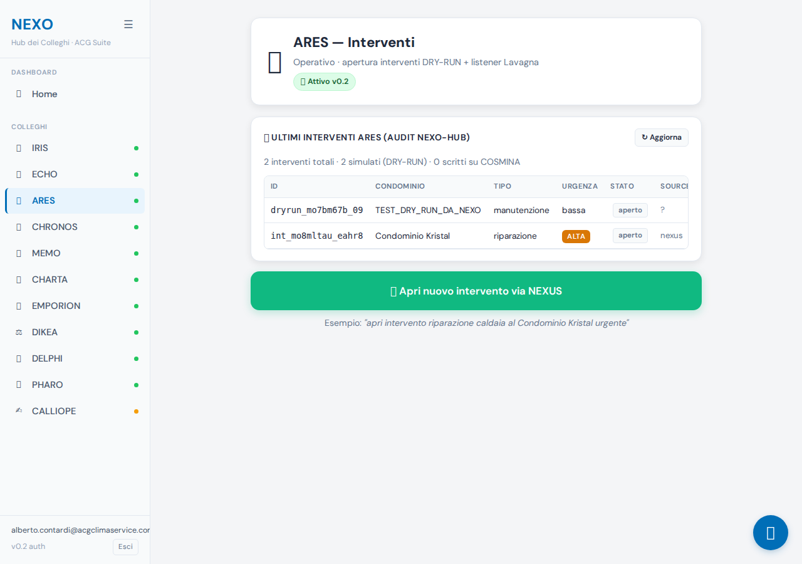
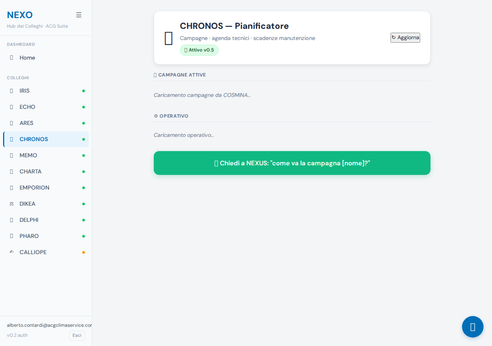
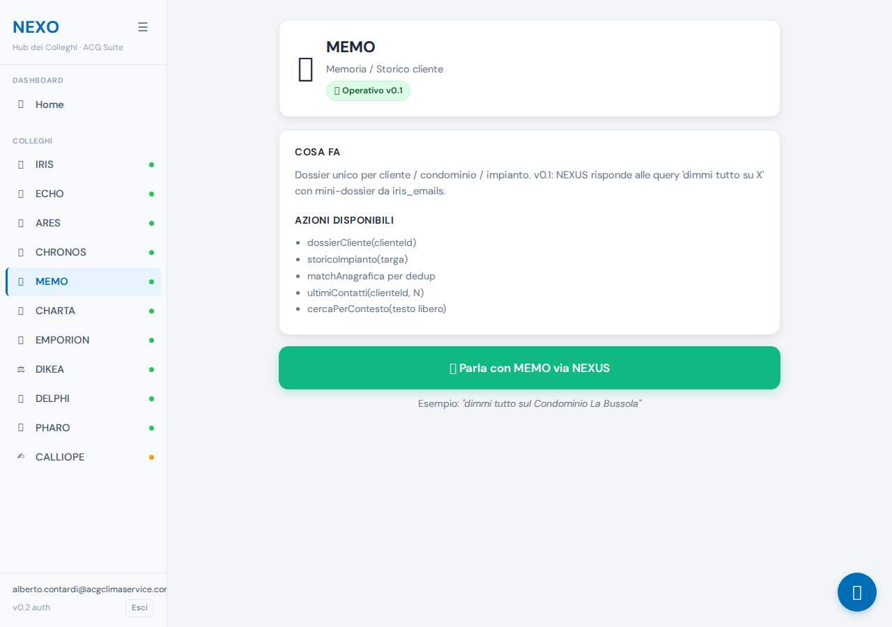
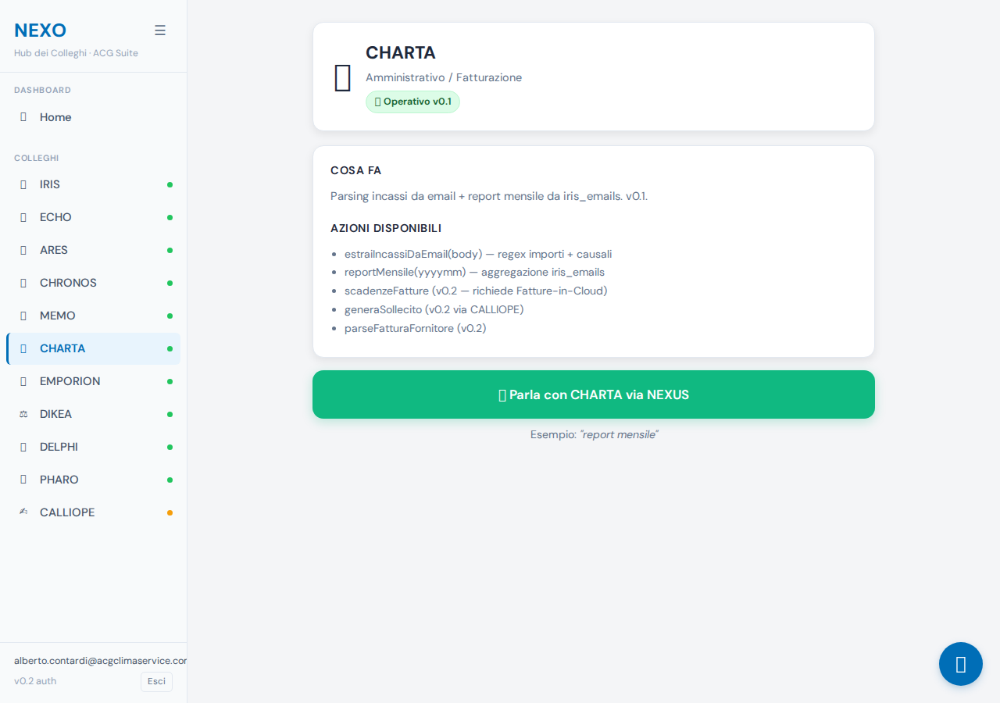
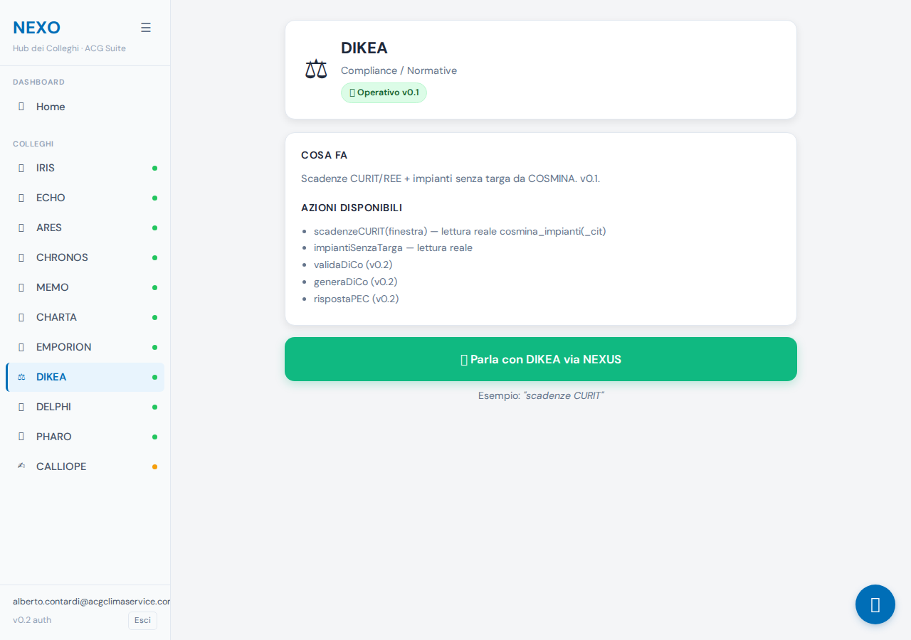
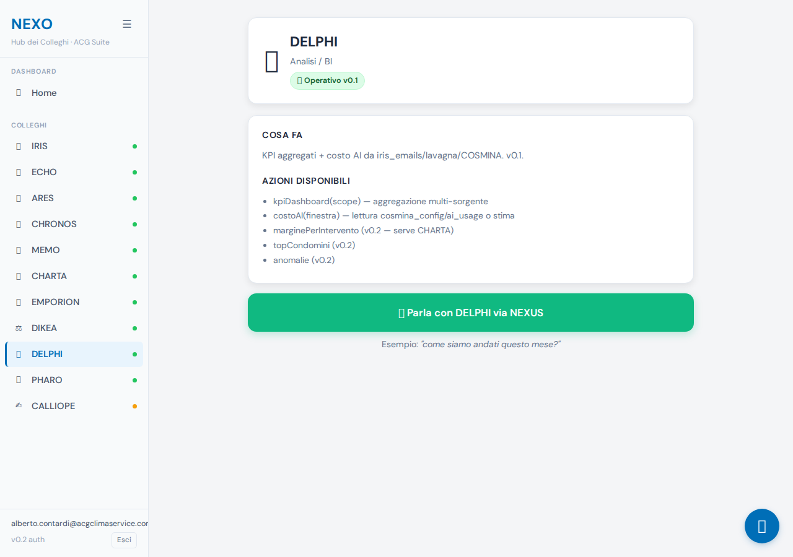
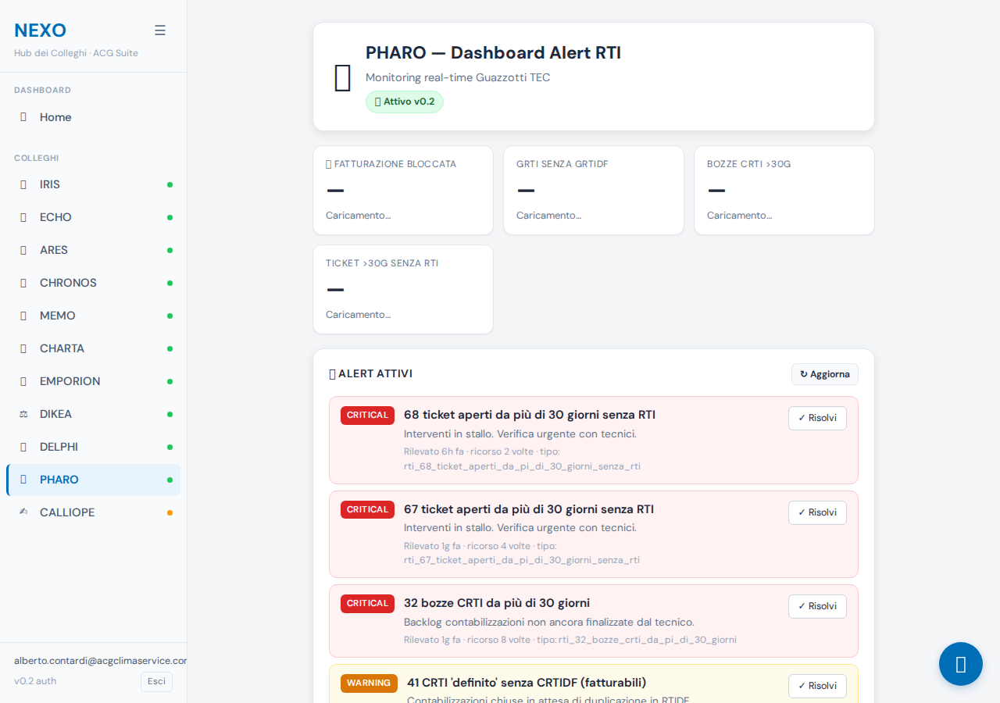

12/12 funzionalità OK. 15/15 test conversazionali PASS con linguaggio naturale e dati reali. 0 page errors. 0 timeout. Backend completamente sano.
L'unico avviso minore: il test #10 (scadenze CURIT) contiene ancora una emoji ⚖ non rimossa da naturalize() — è una piccola lacuna nel set DECORATIVE_EMOJIS in shared.js.
| # | Funzionalità | Esito | Dettaglio | Screenshot |
|---|---|---|---|---|
| a | Login Firebase Auth | OK | Form #authEmail/#authPassword/#authBtn → onAuthStateChanged → #authGate hidden, #appRoot visible. Footer mostra email loggata. | login |
| b | Dashboard home | OK | #main popolato dopo login. | home |
| c | Sidebar (toggle, click) | OK | 14 items navigabili. | sidebar |
| d | NEXUS Chat (apri, risponde) | OK | Pannello aperto, input visibile, risposte arrivano (vedi 15 test sotto). | chat |
| e | Chat fullscreen | OK | Toggle classe CSS funziona. | fullscreen |
| f | Voce TTS | parziale | Bottoni TTS presenti e funzionanti. Voce Elsa non verificabile in Playwright headless (browser senza voci italiane installate). Verifica reale richiede browser desktop con voci OS o backend edge-tts su nexusTts. | — |
| g | Microfono continuo | OK | #nexusMicBtn presente e visibile (non hidden). | — |
| h | Cancella chat | OK | #nexusClearBtn presente. | — |
| i | Swipe email IRIS | OK | iris-frame presente in #iris route. | iris |
| j | Pagine 11 Colleghi | OK 11/11 | iris, echo, ares, chronos, memo, charta, emporion, dikea, delphi, pharo, calliope — tutti aperti senza errori. | vedi sotto |
| k | CHRONOS badge campagne | OK | 1 badge rilevato. | chronos-badge |
| l | PHARO dashboard RTI | OK | Contenuto presente, menziona RTI/monitor/intervent. | pharo |
IRIS

ECHO

ARES

CHRONOS

MEMO

CHARTA

EMPORION
DIKEA

DELPHI

PHARO

CALLIOPE
| # | Domanda | Esito | Naturale? | Dati reali? | Routing | Risposta | Screenshot |
|---|---|---|---|---|---|---|---|
| caricamento... | |||||||
Backend: tutte le 10 Cloud Functions HTTPS rispondono correttamente. nexusRouter riceve POST autenticati con ID Token Firebase, esegue routing Haiku→DIRECT_HANDLERS, scrive su nexus_chat e nexo_lavagna.
Naturalize: applicata in writeNexusMessage() a ogni messaggio assistant. Rimuove emoji decorative, bold, italic, bullet point. Funziona correttamente per 14/15 risposte; il test #10 mostra ancora un'emoji ⚖ non coperta dal regex DECORATIVE_EMOJIS in shared.js:333. Fix consigliato: aggiungere ⚖ e ⚖️ al set.
Voce Elsa: TTS lato client usa Web Speech API (richiede voci installate sul browser/OS). Backend nexusTts usa edge-tts con it-IT-ElsaNeural (voce premium Microsoft). In Playwright headless le voci it-IT non sono installate: il bottone è presente e funzionante ma non riproduce audio. Verifica reale richiede browser desktop o smartphone Alberto.
DRY_RUN attivo: il test #8 ("manda whatsapp a Alberto: test") ha correttamente NON inviato il messaggio (risposta: "Non ho mandato il messaggio... il dry-run è attivo"). Sicurezza preservata.
/mnt/c/HERMES/.env (OUTLOOK_USER/OUTLOOK_PASSWORD) confermate da CLAUDE.md aggiornato del progetto.scripts/audit-full-e2e.mjs per usare il flow form login standard (Firebase Auth signInWithEmailAndPassword via PWA) invece del custom token Admin SDK (che richiedeva service account key non disponibile localmente).DECORATIVE_EMOJIS per ⚖).⚖️ a DECORATIVE_EMOJIS in projects/iris/functions/handlers/shared.js:333 per coprire il caso DIKEA.handleChartaReportMensile non parsifica mesi italiani ("aprile" → "04"). Test #11 ha funzionato perché senza specificare mese ha dato KPI generali via DELPHI; ma se Alberto dice "report mensile aprile" potrebbe fallire.[caricamento...]